Website ini dibuat untuk memperkenalkan dan meningkatkan kesadaran tentang pentingnya Sustainable Development Goals (SDGs) atau Tujuan Pembangunan Berkelanjutan. SDGs merupakan 17 tujuan global yang dibuat oleh Perserikatan Bangsa-Bangsa (PBB) untuk menciptakan kehidupan yang lebih baik, sehat, adil, dan berkelanjutan bagi seluruh masyarakat. Dalam website ini, kami akan membahas dua tujuan SDGs, yaitu SDGs 3: Kehidupan Sehat dan Sejahtera (Good Health and Well-being) serta SDGs 15: Ekosistem Daratan (Life on Land). Kedua tujuan ini saling berkaitan karena lingkungan yang sehat dan terjaga dapat mendukung kehidupan manusia serta seluruh makhluk hidup. Melalui website ini, kami ingin mengajak semua orang untuk lebih peduli terhadap kesehatan, lingkungan, dan kelestarian alam. Mari bersama-sama mengambil tindakan nyata, mulai dari hal kecil di sekitar kita. Karena bumi yang sehat adalah awal dari kehidupan yang lebih baik untuk masa depan! 🌱
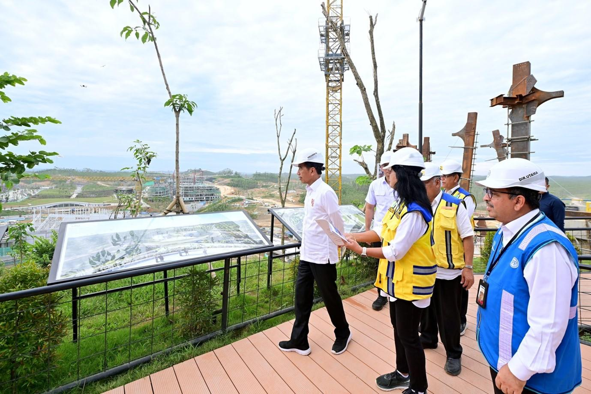
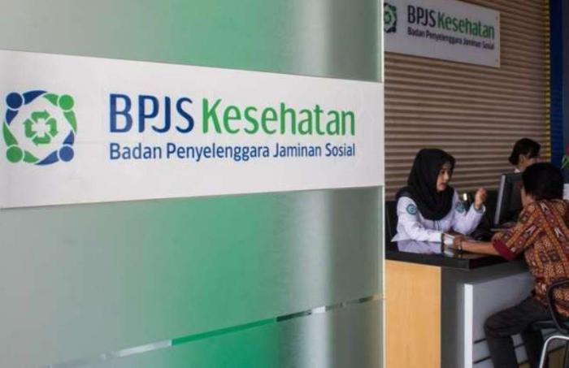
Sustainable Development Goals (SDGs) atau Tujuan Pembangunan Berkelanjutan adalah agenda global yang disusun oleh Perserikatan Bangsa-Bangsa (PBB) dan disepakati oleh 193 negara, termasuk Indonesia, pada tahun 2015. SDGs terdiri dari 17 tujuan utama dan 169 target yang ingin dicapai hingga tahun 2030, mencakup dimensi ekonomi, sosial, dan lingkungan. Pencapaian SDGs membutuhkan kerja sama dan komitmen dari berbagai pihak, mulai dari pemerintah, sektor swasta, akademisi, organisasi masyarakat, hingga individu. Setiap negara memiliki tanggung jawab untuk menerapkan tujuan-tujuan tersebut sesuai dengan kondisi, kebutuhan, dan prioritas pembangunan masing-masing. Di Indonesia, implementasi SDGs diwujudkan melalui berbagai kebijakan dan program pembangunan nasional maupun daerah yang berorientasi pada peningkatan kesejahteraan masyarakat, pemerataan pembangunan, serta pelestarian lingkungan.
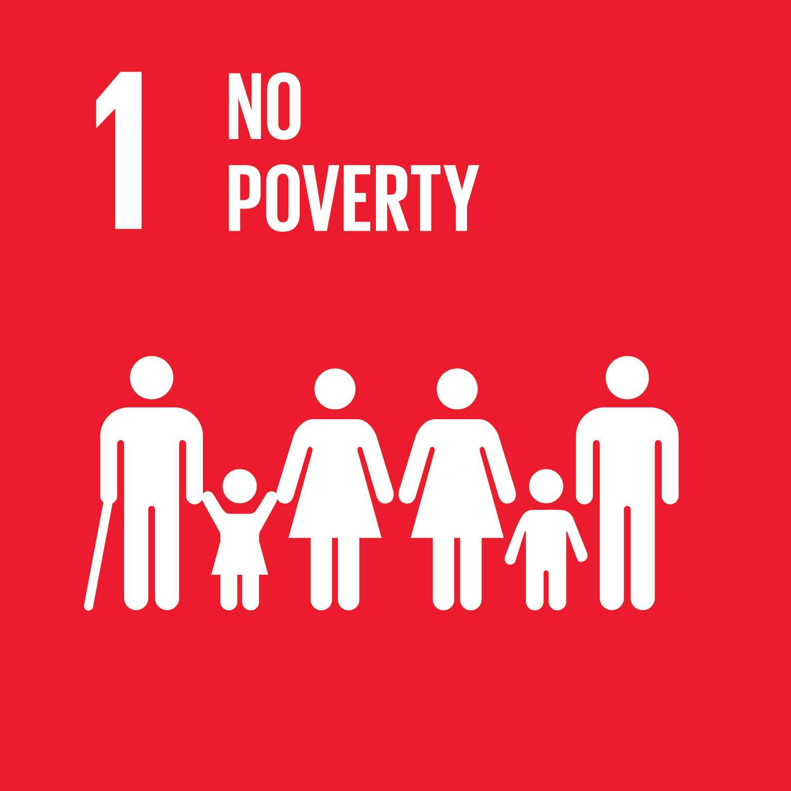
Bertujuan untuk mengakhiri kemiskinan dalam segala bentuk di seluruh dunia pada tahun 2030. Fokus pada upaya pengentasan kemiskinan ekstrem dan pemberdayaan mereka yang hidup dalam kondisi rentan.
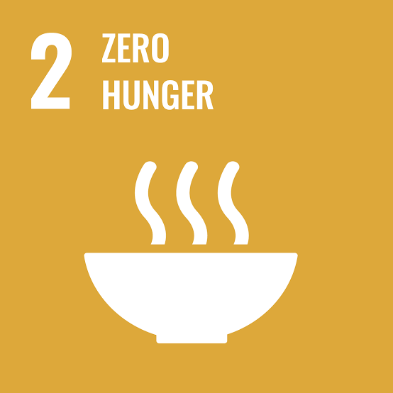
Menargetkan penghapusan kelaparan, mencapai keamanan pangan, meningkatkan nutrisi, dan mendukung pertanian berkelanjutan. Tujuan ini berkomitmen untuk memastikan semua orang memiliki akses ke makanan yang cukup, aman, dan bergizi.

Memprioritaskan kesehatan umum dan kesejahteraan masyarakat. SDG ini mencakup upaya untuk mengurangi angka kematian, mengendalikan penyebaran penyakit menular, serta meningkatkan akses ke pelayanan kesehatan yang terjangkau.

Bertujuan menjamin pendidikan yang inklusif dan merata serta mempromosikan kesempatan belajar sepanjang hayat untuk semua. Fokus pada akses pendidikan dasar dan menengah yang layak, peningkatan kualitas pengajar, serta pemerataan fasilitas belajar.
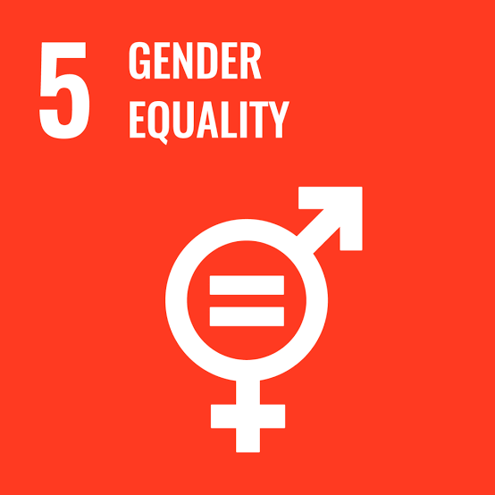
Menargetkan pencapaian kesetaraan gender dan pemberdayaan seluruh perempuan dan anak perempuan. Tujuan ini menekankan penghapusan segala bentuk diskriminasi dan kekerasan serta kesempatan yang setara dalam pendidikan, pekerjaan, dan kepemimpinan.
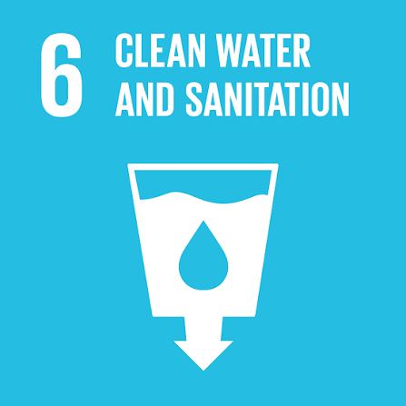
Berfokus pada ketersediaan dan pengelolaan air bersih serta sanitasi yang berkelanjutan untuk semua orang. Mencakup perlindungan sumber air, peningkatan kualitas air, serta akses fasilitas sanitasi dan kebersihan yang aman.

Menargetkan pemberian akses universal terhadap energi yang terjangkau, handal, berkelanjutan, dan modern. SDG ini juga mencakup promosi energi terbarukan dan efisiensi energi.
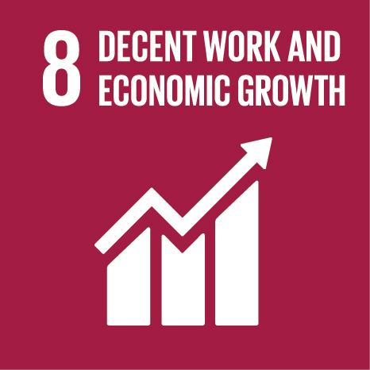
Bertujuan untuk menciptakan pekerjaan yang layak, pertumbuhan ekonomi inklusif, dan perlindungan sosial bagi semua. Tujuan ini menekankan pentingnya menciptakan peluang pekerjaan produktif dan kondisi kerja yang layak.
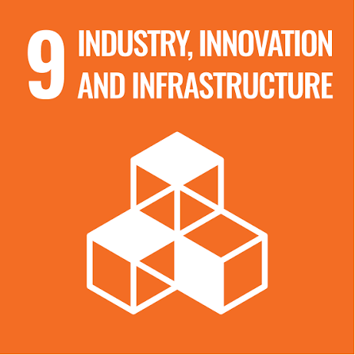
Berfokus pada pembangunan infrastruktur yang tangguh, promosi industrialisasi inklusif dan berkelanjutan, serta dorongan terhadap inovasi. Memperkuat akses konektivitas, riset, dan teknologi modern untuk mendukung pembangunan jangka panjang.

Bertujuan mengurangi kesenjangan di dalam maupun antarnegara. Mendorong pemberdayaan sosial, ekonomi, dan politik bagi semua orang serta kebijakan yang adil dan inklusif bagi kelompok yang terpinggirkan.
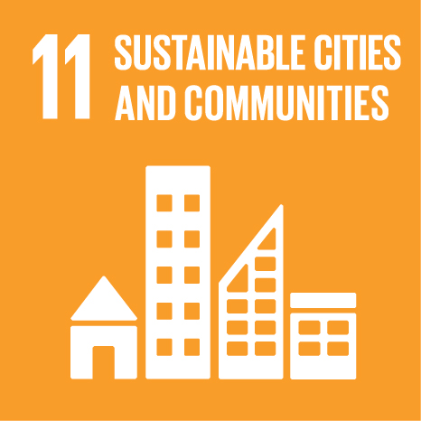
Bertujuan untuk membuat kota dan pemukiman manusia inklusif, aman, tangguh, dan berkelanjutan. Fokus pada perencanaan tata kota yang baik, akses terhadap transportasi umum, serta perlindungan dan pemulihan warisan budaya.

Mencita-citakan pola konsumsi dan produksi yang berkelanjutan. Tujuan ini menekankan pentingnya efisiensi sumber daya, pengelolaan limbah yang tepat, dan pengembangan produk yang ramah lingkungan.

Menargetkan upaya global untuk mengatasi perubahan iklim dan dampaknya. Tujuan ini mencakup pengurangan emisi gas rumah kaca, adaptasi terhadap perubahan iklim, dan peningkatan ketahanan terhadap bencana alam.
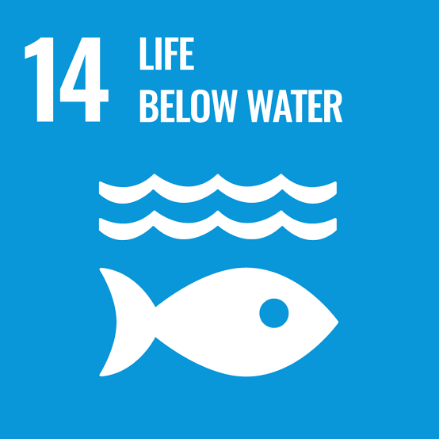
Bertujuan melestarikan dan memanfaatkan secara berkelanjutan sumber daya laut, samudra, dan kelautan untuk pembangunan berkelanjutan. Menekankan pencegahan polusi laut, perlindungan terumbu karang dan habitat laut, serta perikanan yang lestari.
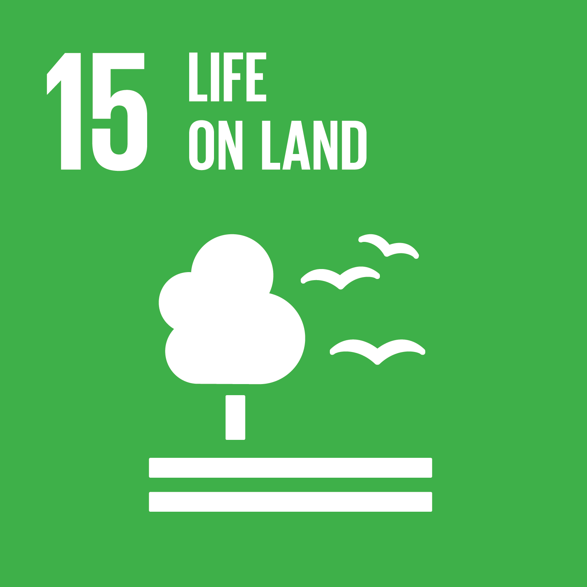
Melindungi, merestorasi, dan meningkatkan pemanfaatan berkelanjutan ekosistem daratan, mengelola hutan secara lestari, memerangi penggurunan, serta menghentikan degradasi lahan dan hilangnya keanekaragaman hayati.
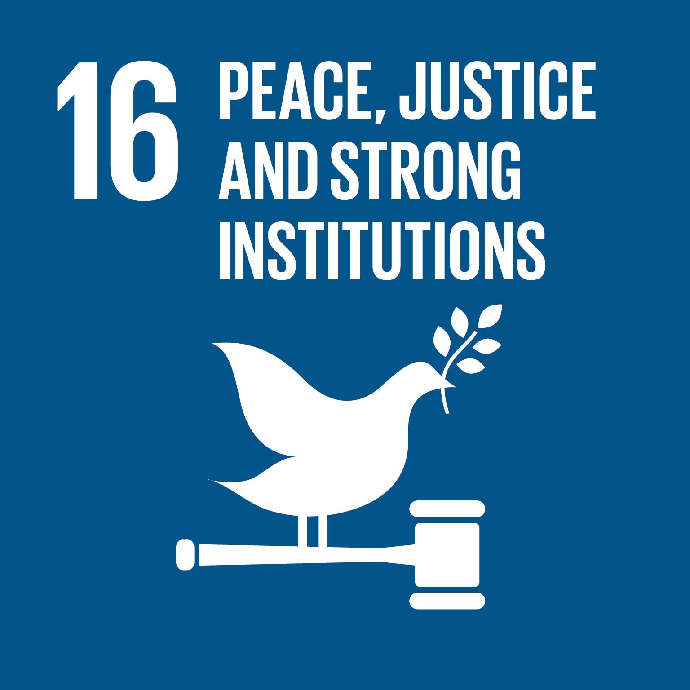
Bertujuan untuk mempromosikan perdamaian, keadilan, dan institusi yang kuat. Tujuan ini mencakup pengurangan kekerasan, akses setara terhadap sistem hukum, dan pemberantasan korupsi.

Menargetkan peningkatan kerjasama internasional dalam pencapaian SDGs. Fokus pada pengembangan kapasitas, transfer teknologi, dan dukungan keuangan untuk memastikan keberlanjutan upaya pembangunan.